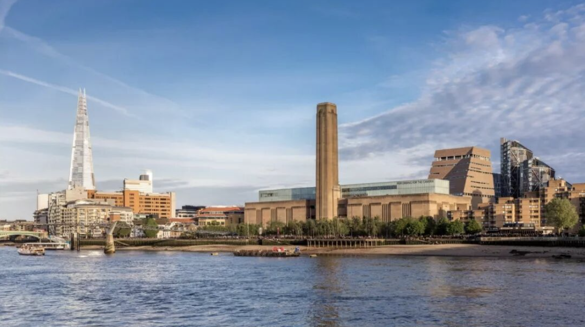

From audience data to public programs, Tate Modern is rethinking what a museum is for — building “drop-in” civic space, strengthening networks, and redesigning interpretation. In this interview, Director Frances Morris also reflects on the real-estate logic behind many private museums in China.

Tate Modern is one of the world’s most visited contemporary art museums — but its leadership is uneasy with an audience profile that skews highly educated and relatively affluent. In this interview, Director Frances Morris explains how Tate is shifting from a “temple of art” model toward a more open social space: building “drop-in” programs, expanding partnerships, improving digital access, and redesigning interpretation without forcing a single narrative. She also offers a pointed observation on China’s surge of private museums: many are propelled by real-estate development rather than collections or long-term public commitments.
Located on the south bank of the River Thames in London, Tate Modern faces St Paul’s Cathedral across the water and is connected by the Millennium Bridge. Since opening in 2000, it has remained one of the most popular museums of modern and contemporary art in the world.
However, Morris has expressed concern about the composition of Tate Modern’s audience and believes that change is urgently needed. Statistics show that 70% of its visitors have received higher education, 16% have a professional background in art, 53% are international visitors, 18% come from Black and minority ethnic backgrounds, family visitors account for only 10%, young people make up just 19%, and low-income groups represent only 6%.
Morris believes that although Tate Modern is an international museum, it has not established sufficiently strong connections with its local communities—an area she sees as crucial for the institution’s next phase of development. “People need to feel a sense of belonging in a comfortable space. Museums must be able to offer this, attracting more people to participate, do what they want to do, and form social connections. Social motivation will be one of the key driving forces,” she says.
“No museum should operate in isolation. Whether internationally or locally, we are all part of an important ecosystem, and we share core values.”
“Tate Exchange is truly fascinating. The space functions like a laboratory—everything within it is an experiment.”
“Rather than imposing a single narrative that restricts understanding, we aim to offer many different ways for people to engage with exhibitions.”
“I think this is a real issue. In my view, the proliferation of these museums is not necessarily matched by extraordinary collections or architectural ideas; one element driving museum development appears to be real estate.”
“The transition from private to public is not simply about bricks and mortar, but about vision and commitment—about how institutions serve the public and the relationship of trust between the private and the public. I am very interested to see which institutions will succeed in doing this.”